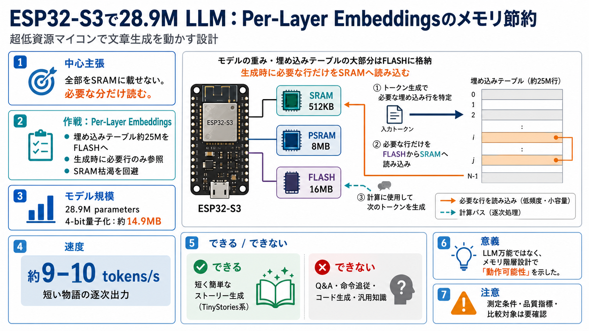

Gemma 3n model overview | Google AI for Developers
# Gemma 3n model overview. Gemma 3n is a generative AI model optimized for use in everyday devices, such as. parameter-e…

# Gemma 3n model overview. Gemma 3n is a generative AI model optimized for use in everyday devices, such as. parameter-e…
The post also mentions "per layer embeddings" which seems to allow them to leave almost half of the parameters of the mo…
## June, 2026. The following model has been deprecated and are no longer available:. * anthropic/claude-opus-4-7. * anth…
This page tracks AI news and libraries. If you want live Python, ML, or RAG mentorship—not just reading—start here:. # A…
arXiv cs.CRDependability and SecurityarXivotherConfidentialityintegrityprivacycs.DScs.CRarXiv cs.CR. Nikolov and Ullman …